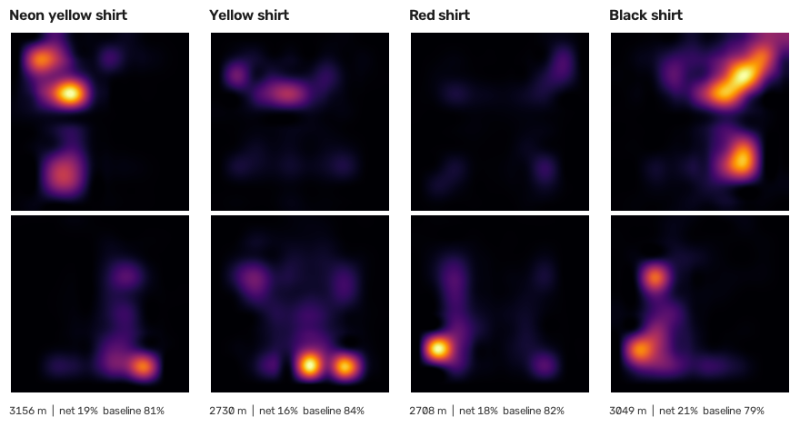

Padel player tracking: a computer vision pipeline demo
One fixed camera behind the court. The pipeline finds the four players, maps them to real court metres, keeps their identities, and produces per player distance, zones, heatmaps, sprint counts and timestamped net approach events with confidence scores. A 76 minute match is processed in about 8 minutes on parallel serverless GPUs. This page shows how it works, what it costs, and where it still fails.
Code available on request · Python, supervision, roboflow trackers (ByteTrack), RF-DETR (Apache 2.0), Modal. No Ultralytics and no AGPL dependency (enforced by a test).
All accuracy numbers were scored against labels made with a vision language model and then checked by a human (details in "How the numbers were measured"). Sample sizes are small, so read each figure with a margin of roughly five points.
Approach
- Chunks. The video is cut into 60 second chunks with a 5 second overlap and processed in parallel, so wall time stays roughly flat as the match gets longer. Consecutive chunks see the same frames in the overlap, so one person has near identical boxes in both. Identities are linked across chunks by box overlap, which is exact when it links, and a link is only made when the evidence is clear. Otherwise a new identity starts, never a guess.
- Detector. RF-DETR (Apache 2.0), behind a small registry so another detector can be swapped in by name. Detections are gated to the court using the homography, which removes spectators and neighbouring courts.
- Homography. A one time calibration per camera position from 8 floor points (net base, service line, far baseline). A small click tool produces it. Measured reprojection error is 0.23 to 0.55 m.
- Identity. Anchored on the first frame boxes and names from the tagging tool. Appearance is a court colour masked histogram of the torso, and each chunk's four candidates are named by one assignment so two candidates can never get the same name.
- Outputs. Positions in metres at 10 Hz, smoothed. Distance, sprints, net versus baseline zones, a 10 by 20 heatmap grid, and net approach events with a confidence score built from tracking coverage, how far back the approach started, and a plausible approach speed.
- Ball. Tiled detection (SAHI style) with gap filling. It is measured below but not yet wired into the events.
Demo videos
The replays are rendered from the pipeline's own output (tracked positions in metres). They contain no source footage. The original videos belong to their uploaders, so they are linked or embedded from YouTube and never copied here.
Match 1: named players, running stats and events (output)
A 90 second top down replay: four named players, 3 second trails, a flag whenever a net approach is detected (with its confidence), and running distance and event counts. The source is a 54 minute indoor padel match from a camera behind the back glass. Uploaders disabled embedding for this one, so here is the original video at the same moment (opens YouTube).
Match 2: input next to the tracker output, including where it breaks
Input: Padel Training Match, PadelKanalen (embedded from YouTube, 02:45 to 03:55).
Output: a four target Kalman tracker at 24 fps. It follows all four players cleanly, then identity can no longer be trusted once the players change ends (about 03:38).
Press play on the YouTube video and the replay follows it. This match is the hard case: all four players wear dark clothes.
Results
Speed and cost
| Run | Video | Chunks | GPUs | Wall time | Per chunk (mean / max) | Est. GPU cost |
|---|---|---|---|---|---|---|
| Match 1 | 54.2 min, 1080p, 60 fps | 55 | 4 | 5.9 min | 22.6 s / 25.1 s | about $0.30 |
| Match 2 | 75.9 min, 1080p, 24 fps, 1.8 Mbps | 76 | 4 | 8.1 min | 23.9 s / 26.2 s | about $0.42 |
| Match 1 with a second tiled pass for missed players off by default | 54.2 min | 55 | 4 | 16.7 min | 69.6 s / 75.4 s | about $0.87 |
Costs are estimates: container time (chunks x per chunk time, plus about 20 s model load per GPU) at an assumed $0.80 per GPU hour. Modal's billing page is the source of truth. The runs cover detection and tracking. Wall time is flat in match length because chunks run in parallel, limited only by the GPU count. The tiled second pass tripled the time and did not improve coverage or identity, so it is switched off.
Detection and calibration
| Measure | Result | Basis |
|---|---|---|
| Player detection precision (court gated, the four players) | 99.4% | 108 labelled frames across match 1 |
| Player detection recall | 96.3% (human check: 123 of 128 player slots) | 108 frames; 32 frames checked by a human |
| Calibration error, match 1 / match 2 | 0.23 m / 0.28 m (mean) | 8 clicked floor points each, no lens undistortion |
| Calibration error, two short clips (other venues) | 0.36 m / 0.55 m | wide angle lenses |
Lesson: my first by eye calibration put the net on its top tape instead of the floor line. Every distance to the net was off, and the first event check scored 0 of 40. It was found by comparing estimated distances with an independent judgement, and fixed. Positions are only as good as the calibration.
Identity ablation, match 1 (distinct shirt colours)
| Method | Accuracy | Comment |
|---|---|---|
| Chain identities chunk to chunk (overlap linking only) | 28.6% | each player fragments across 8 to 12 ids, some ids are shared by players |
| Global appearance clustering, hue and saturation histogram | 78% to 82% | 4 identities, constrained so one chunk cannot use a name twice |
| Add a general purpose body embedding (DINOv2) | 50% to 67% | worse, and 14 s more per chunk. Dropped |
| Court colour masked torso histogram, whole match clustering | 96.7% | removing the blue court from the histogram was the key change |
| Same, streaming: enrol on the first 3 chunks | 97.2% | 396 labelled instances (labels from a vision model) |
| Named assignment from a tag file, strict | 97.2% / 94.4% | vs model labels (385 of 396) / vs human verified labels (67 of 71) |
Other venues (2 minute clips, 4 venues plus the start of match 1)
| Clip | Appearance method | Per frame tracker ids |
|---|---|---|
| Venue A (outdoor, green court) | 100% | 98% |
| Venue B | 100% | 81% |
| Start of match 1 | 100% | 87% |
| Start of match 2 (dark kit, same venue as below) | 95% | 87% |
| Venue C (four dark outfits) | 96% | 74% |
| Weighted, 170 instances | 98.2% | 85.9% |
Short clips only (no long range drift, no streaming), labels from a vision model and not individually human checked. Note the start of match 2 scores 95% over 2 minutes but about 63% over 76 minutes: short windows are far easier.
Identity on look alike kit, match 2 (the open problem)
Match 2 is a 76 minute match where all four players wear dark clothes, one player is told apart by light shorts, and the partners rotate between games. This is the case that does not work yet. Everything below is scored on human verified labels where marked, tuned on separate frames.
| Approach | Accuracy | What happened |
|---|---|---|
| Named assignment, anchored on an unverified first frame | 49.4% / 55.9% | my own tag file named the three dark players in the wrong cyclic order. Re anchoring on a human verified frame fixed it |
| Named assignment, anchored on a human verified frame | 62.7% / 60.9% | human labels / model labels. The light shorted player is 21 of 21 |
| Per frame anchored tracker, torso colour | 57.5% / 52.2% | human test (80 instances) / tuning set (412) |
| Same, all appearance features plus position | 10.0% / 17.7% | one swap locks in and poisons the prototypes |
| Conservative tracklets, longest first, torso + legs + head | 62.5% / 56.3% | 14,672 tracklets, never merged across ambiguity |
| Learned person re-identification (OSNet-AIN), tracklets, alone | 42.5% / 31.6% | weaker than colour on its own |
| Tracklets, torso colour + OSNet-AIN | 65.0% / 58.7% | best of the label free runs, within noise of colour alone |
| Padel pair structure decoder (partners share a side, Viterbi over game states) | 52.5% to 55.0% / 53% to 56% | finds the side of the near pair 99% of the time but the partner only 42% to 50% |
| Four target Kalman tracker at 24 fps | 24% to 42% | correct 4 of 4 for 40 to 60 s, then identity breaks at the changeover when players change ends |
| Name Kalman tracks by pooled appearance per window (15 to 240 s) | about 33% | a player's colour depends on court position as much as on who they are |
| Supervised ceiling, whole 5 minute blocks held out (492 labelled instances) | 59% to 66% | torso colour 62% to 64%, OSNet-AIN alone 59% to 60%, colour + OSNet 63% to 66%, brightness and Lab colour 64% |
| Estimated player height | not separable | medians 1.6 to 1.9 m with overlapping spread |
Events and ball
| Measure | Result | Basis |
|---|---|---|
| Net approach events, precision / recall | 71.7% / 57.6% | 10 minute window of match 1, same player within 3 s, reference built from per frame model judgements (1.5 s steps) |
| Same, ignoring which player | 87% / 76% | much of the gap is identity attribution |
| Events with confidence 0.85 or higher | 81% precise | confidence was redesigned after the first version ranked events backwards, and validated on a fresh sample |
| Events versus random time controls | 57.5% and 62.5% vs 2.5% | two samples of 40, a player must start away from the net and end at it |
| Ball, tiled detector, confidence 0.3 | 82% precision / 75% recall | 108 frames, reference ball positions from a vision model, 30 px tolerance |
| Ball, full frame detector, confidence 0.3 | 90% / 44% | tiling doubles recall at a small precision cost |
| Missed players recovered by a second tiled pass | 2 of 5 fully, 2 partly | human flagged frames. The pass cost 3x time on a full match with no gain in coverage or identity |
Per player output (match 1, the full 54 minutes)
| Player | Distance | Sprints | Net / baseline share | Coverage |
|---|---|---|---|---|
| Neon yellow shirt | 3156 m | 17 | 19% / 81% | 95% |
| Yellow shirt (knee brace) | 2730 m | 16 | 16% / 84% | 96% |
| Red shirt | 2708 m | 26 | 18% / 82% | 94% |
| Black shirt | 3049 m | 37 | 21% / 79% | 91% |
259 net approach events were produced across the four players. Sprint = at least 4.5 m/s for at least 0.7 s. Net zone = within 3 m of the net. Positions come from a measured calibration, so distances are indicative, not survey grade.

Per player heatmaps from the output JSON. Each panel is the court, far half on top and near half below the net line, so players are active on both halves because they change ends.
What did not work, and what I learned
- Chaining identities between chunks (28.6%): errors compound. Anchoring every chunk to prototypes and forbidding duplicate names fixed it on distinct kit.
- A "better feature" that was an artefact. Adding brightness and Lab colour looked like a jump from 62% to 97%. It was leakage: two labelled frames from the same minute landed on both sides of my train and test split. Holding out whole 5 minute blocks, it was 64%. All later numbers use time held out splits.
- A wrong anchor poisons every test. The first frame names for match 2 came from an unverified frame, and every result built on it was understated. Identities for a tag file must come from a human verified frame, which the real tagging tool provides.
- Assuming fixed teams. In match 2 the partners rotate, so "team" is not a property of a player. Teams must be derived from the side of the net in each frame.
- Learned re-identification is not magic. OSNet-AIN carries about as much identity information as torso colour on look alike kit (59% to 60% held out) but adds only 1 to 2 points on top of it. Its weights were trained on research datasets with their own terms, so it would also need a licence check before production use.
- Re-tagging does not help appearance. Training only on nearby labels was no better than using the whole match.
Limitations and next steps
- Football is not demonstrated. Everything here is padel. The football path (thirds, shots, goals) exists in code but I have no full size pitch footage to validate it.
- Look alike kit is unsolved (above). Next: identity confidence per detection and pair level outputs when players look alike.
- Live ingestion is not built. Chunk stitching and the named assignment are implemented and tested on saved chunks, not on a live stream.
- Ball events (shots, goals) are not wired to the ball detections yet.
- Annotated QA video over the real footage exists as a renderer but I have produced only short excerpts, and I do not publish source footage here.
- Sample sizes are small (tens to a few hundred labelled instances). One full match with distinct kit, one with dark kit, four short clips.
How the numbers were measured
- Labels. Reference labels (which box is which player, where the ball is, who is at the net) were produced with a vision language model, then checked by a human on a sample: 139 of 140 boxes agreed in the first review (99.3%), and 87 of 90 on match 2 (3 corrections where bystanders were labelled as players). Where a number says "human verified" it is scored on those checked labels only.
- Splits. Parameters were tuned on model labelled frames that the human had not reviewed, and results are reported on the human verified frames. Cross validation holds out whole 5 minute blocks.
- Data. Two full public YouTube matches and a handful of short public clips, used for testing only and not redistributed. The pipeline works from the first frame boxes and names that a tagging tool would supply.
- Licences. RF-DETR (Apache 2.0), supervision and roboflow trackers (Apache 2.0, MIT). No Ultralytics or AGPL code is installed or imported (a unit test checks both). An OSNet-AIN model file (Torchreid, MIT) is vendored for the experiment above, with its licence, and is not part of the production path.
Code
The code and experiment scripts are not public. They are available on request, together with the measured calibration files and tag files behind every table above.